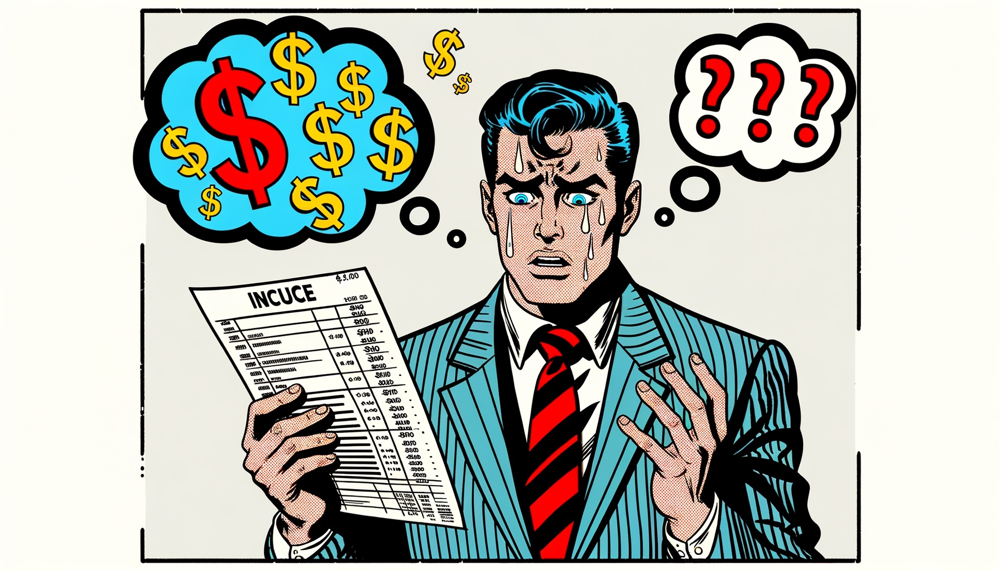

Multi-Agent AI Corporation
6 AI agents running the entire business operation
Full AI corporation: CEO, CMO, CFO, CTO, Designer, CPO. Event-driven. Self-healing. 24 sprints without failure.
3,963
Tests
24
Sprints
0
Downtime
They automated their operations. They run AI agents for content, outreach, analytics, and team coordination. They know exactly what produces results. And you? You're still hiring humans for work that machines do better. That gap gets wider every week.
They're not smarter than you. They just stopped doing sh*t manually.
Processes that take your team days? Seconds. Operations across departments? Automated. Decision-making? Data-driven and real-time. The tools exist. Forward-thinking founders are using them. The only question is: how long will you pretend this isn't happening?

Every system below exists in production. Not a demo. Not a pilot. Running 24/7. The question isn't whether this works — it's why your business doesn't have it yet.
Personalized 1:1 education. Learn to build AI agents, automate workflows, and think in systems. From zero to building your own AI army.
Workshop format for teams. Modern AI landscape, hands-on tool demos, custom use cases. Turn your team from AI-curious to AI-native.
Full process audit, automation blueprint, ROI projections. Know exactly where AI saves money and what to build first.
Content factories, outreach systems, data pipelines, reporting dashboards. Multi-agent systems that run your operations 24/7.
CEO, CMO, CFO, CTO, Designer, CPO — all AI agents. Event-driven, self-healing, production-grade. 3,963 tests. Zero downtime.
Make your brand visible to ChatGPT, Perplexity, Claude. Generative Engine Optimization is the new SEO. Schema, llms.txt, content architecture.
I don't show slides. I show running systems with test suites and revenue dashboards.
Full AI corporation: CEO, CMO, CFO, CTO, Designer, CPO. Event-driven. Self-healing. 24 sprints without failure.
LinkedIn, Threads, Telegram, Facebook, VK, YouTube, Bluesky, Mastodon — all automated with per-platform optimization.
Career club: 1,158+ bot tests, 3 pricing tiers, partner program, automated commissions, webinar funnels.
Crypto marketing tools: bot, web app, CRM, vendor management. 7 vendors, 9 offers. Zero to production in weeks.
Not mockups. Not slides. Live products, real communities, and systems in production.
A full autonomous AI company with 6 agents (CEO, CMO, CFO, CTO, Designer, CPO) running 24/7. Event-driven architecture. Self-healing systems. 24 consecutive sprints without a single failure.

Discipline-driven career community. Telegram bot, Mini App, webinar funnels, AI podcast pipeline, 1,158+ tests.
Crypto marketing tools marketplace. 7 vendors, TG Mini App, CRM, affiliate tracking. Full-stack solo build.
AI school for nerds. Community of curious minds exploring the world of AI together. Events, workshops, open-source.
Workshop with Kaş Municipality on AI & Tourism. Bilingual (TR/EN). March 2026.
AI-powered microfinance & portfolio management for Kaş tourism businesses.
Educational lecture on human networks & career for the Sborka community.
Research on coding agents landscape
Independent AI code review for Claude Code
Autonomous publishing on 13 platforms
MCP-first job marketplace, 38K vacancies
29 platform audits, strategies for each
Interactive infographic on AI & media
Your competitor already automated this. You're still paying $300K/year for teams doing work that AI agents handle for a fraction. They invested $600 in one call. Now their business runs while they sleep.
Everyone who waited "just one more quarter" is now 2 years behind. Don't be that person.

Engineer who transforms businesses with AI. Founder who codes production systems. Most consultants deliver slides. Most engineers don't understand business. I build multi-agent AI systems that run in production — 3,963 tests, 6 agents, 24/7 operation.
From founder training to full process automation. Content factories, outreach systems, dashboards — all AI-powered, all tested, all in production. I've run 2 micro-conferences and a bootcamp in Kaş, Turkey on AI transformation.
I don't send a team. I don't subcontract. I'm the architect and the engineer. Want your business powered by AI? Book a call.
I spent 6 months thinking I need to get into AI agents. Never started. Then I came to Tim. No going back. His support — someone who knows my pain points because he's in marketing himself — is priceless. I broke through my glass ceiling. All of this for just $200.
After Tim's mentoring, my approach to work and my own thinking changed. It's mind-blowing — the terminal is the first thing I open in the morning and the last thing at night. News, research, content — all through AI agents now.
A task that used to take our SMM specialist DAYS — now done in MINUTES. The CEO approved the quality. Now every task I see, I think: how can I automate this?
Thanks for Claude specifically. Want to automate sales for our restaurant IT system in Spain and our HR agency. Tim is brilliant — the analyses I can do now are amazing.
Your competitors already moved on. They automated operations, trained their teams on AI, and 10x'd efficiency. You can keep pretending it's fine. Or book 1 hour and catch up.
Book 1 Hour — $600 →Calendly. Pick a time. 60 minutes. A plan. Done.